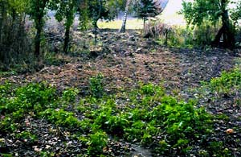


To, co nazywam Zagrodą, zajmuje 33 ary. Kiedy się tu osiedliliśmy - mój mąż Lucjan i ja - w lipcu 2001 roku, każdy centymetr ziemi pokrywały monstrualne chwasty. W końcu je pokochałam. Kto zakładał ogród na ugorze wie, że walkę z roślinami dziko rosnącymi przegra.

Osiadłam w Moczydle w wieku 51 lat i przez te lata miałam sporo zajęć i obowiązków. Także pasji i zainteresowań. Nie było wśród nich ogrodu. Podstawowych prac ogrodniczych nauczyły mnie babcie, ale było to w dzieciństwie i dotyczyło uprawy podstawowych warzyw na wiejskim zagonie. Babcie miały co prawda ładne ogródki przy domu, i ja się nimi też zachwycałam, ale zajmowanie się nimi byłoby ostatnim zajęciem, na jakie miałam czas i ochotę.
Osiedlenie się w Moczydle było wyzwaniem. Najpierw musieliśmy stworzyć sobie podstawowe warunki do życia, bo dom był ruiną.

Rychło jednak zrozumiałam, że skoro los zesłał mi na starość urodzajny skrawek ziemi, nie mogę tej szansy zmarnować, nawet jeśli nie mam pomysłu, co z nim zrobić.
W drodze na wieś, na stacji benzynowej, kupiłam miesięcznik Mój Piękny Ogród i zaniemówiłam. Były tam zdjęcia, jakie zawładnęły moją wyobraźnią i przez kilka nocy budził mnie sen, w jakim wędrowałam po rajskich ogrodach, które oczywiście już były moje. Czytałam o roślinach, starałam się zapamiętać ich nazwy, ale było ich tyle, że w głowie zostało zaledwie kilka.
W następnym miesiącu znów kupiłam to czasopismo, ale też kilka innych, i zrozumiałam, że pomysł na ogród, jaki zobaczyłam w pierwszym numerze, nie jest moim pomysłem, bo bardziej podoba mi się ten z następnego numeru. A potem jeszcze z kolejnego. I tak przez 10 lat...
Oczywiście od początku moim marzeniem było obsadzić czymkolwiek sporą powierzchnię. Ideałem były rabatki pełne rozmaitych roślin. Nie ważne jakich, byle kwitły i zapełniały puste miejsce. I żeby były rozległe, bo inaczej wyrosną chwasty.
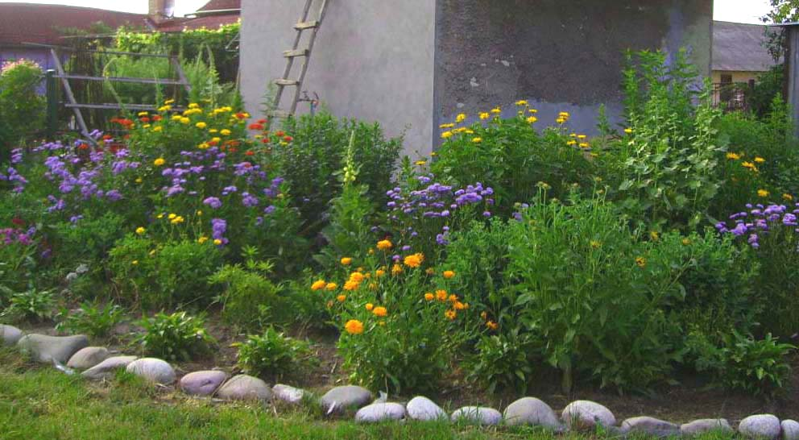
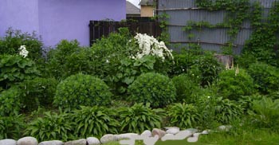

Osiadłam w Moczydle w wieku 51 lat i przez te lata miałam sporo zajęć i obowiązków. Także pasji i zainteresowań. Nie było wśród nich ogrodu. Podstawowych prac ogrodniczych nauczyły mnie babcie, ale było to w dzieciństwie i dotyczyło uprawy podstawowych warzyw na wiejskim zagonie. Babcie miały co prawda ładne ogródki przy domu, i ja się nimi też zachwycałam, ale zajmowanie się nimi byłoby ostatnim zajęciem, na jakie miałam czas i ochotę.
Osiedlenie się w Moczydle było wyzwaniem. Najpierw musieliśmy stworzyć sobie podstawowe warunki do życia, bo dom był ruiną.
Rychło jednak zrozumiałam, że skoro los zesłał mi na starość urodzajny skrawek ziemi, nie mogę tej szansy zmarnować, nawet jeśli nie mam pomysłu, co z nim zrobić.
W drodze na wieś, na stacji benzynowej, kupiłam miesięcznik Mój Piękny Ogród i zaniemówiłam. Były tam zdjęcia, jakie zawładnęły moją wyobraźnią i przez kilka nocy budził mnie sen, w jakim wędrowałam po rajskich ogrodach, które oczywiście już były moje. Czytałam o roślinach, starałam się zapamiętać ich nazwy, ale było ich tyle, że w głowie zostało zaledwie kilka.
W następnym miesiącu znów kupiłam to czasopismo, ale też kilka innych, i zrozumiałam, że pomysł na ogród, jaki zobaczyłam w pierwszym numerze, nie jest moim pomysłem, bo bardziej podoba mi się ten z następnego numeru. A potem jeszcze z kolejnego. I tak przez 10 lat...
Oczywiście od początku moim marzeniem było obsadzić czymkolwiek sporą powierzchnię. Ideałem były rabatki pełne rozmaitych roślin. Nie ważne jakich, byle kwitły i zapełniały puste miejsce. I żeby były rozległe, bo inaczej wyrosną chwasty.
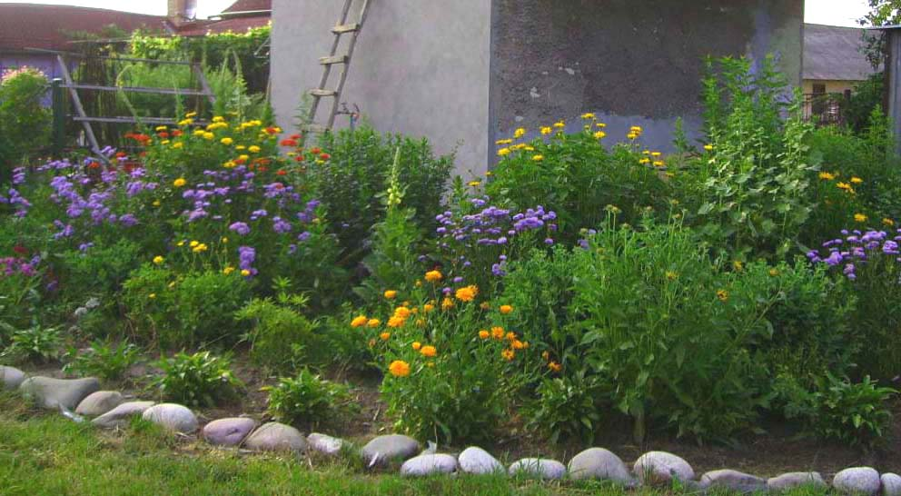
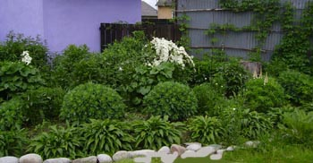

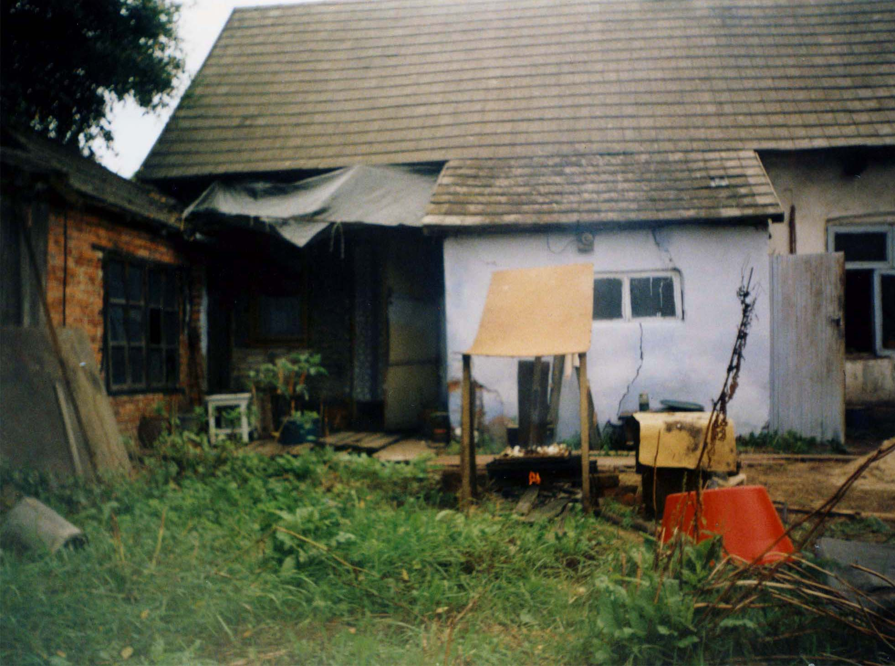
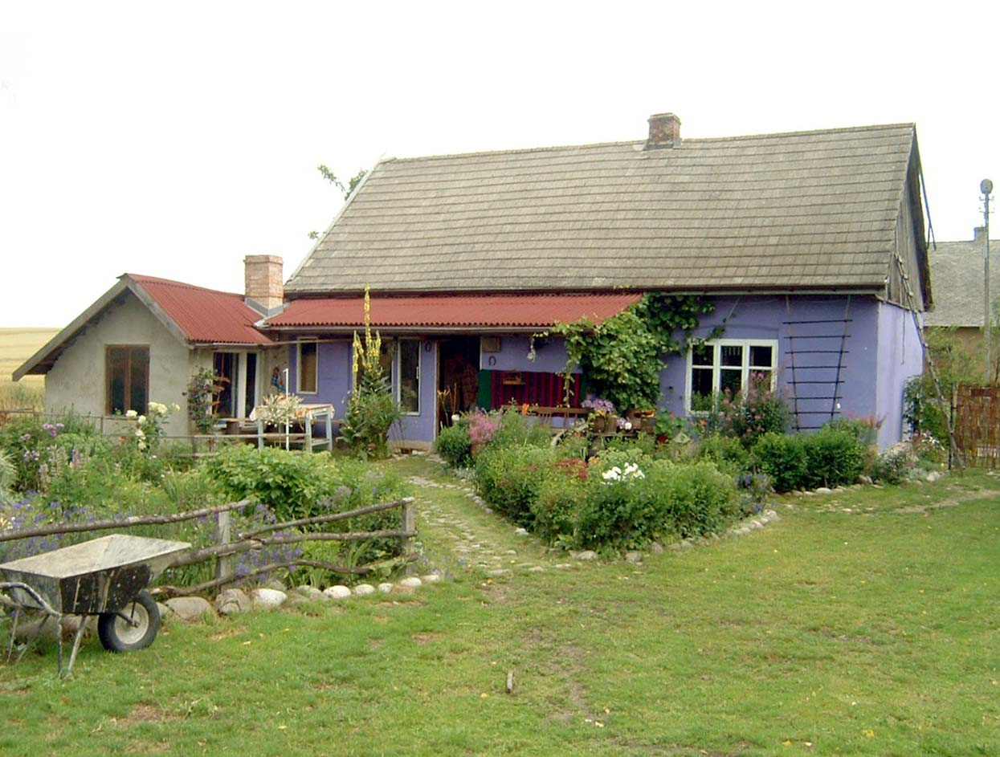
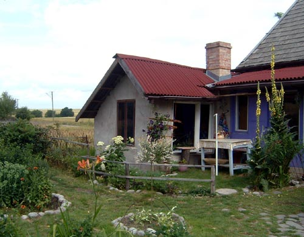

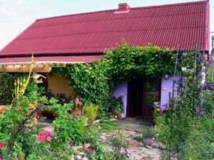
Pierwszym pomysłem, jaki podpatrzyłam w ogrodniczych pisemkach, była ścieżka biegnąca spod drzwi domu w głąb ogrodu. Wczesną wiosną udało się, z pomocą przyjaciół, uporządkować najbliższy kawałek ogrodu.
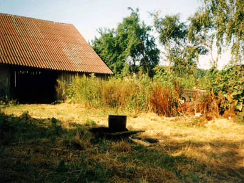
W miejscu, gdzie rosły te chwasty, powstała dróżka, jaką wyznaczały dodatkowo otoczaki. W maju 2002 roku można było udać się za stodołę takim traktem.
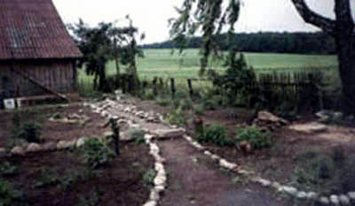
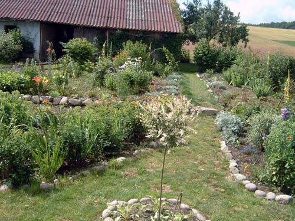
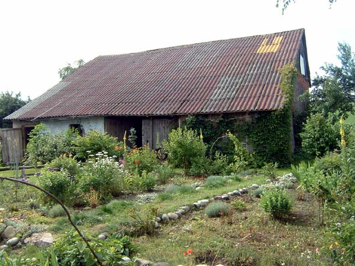
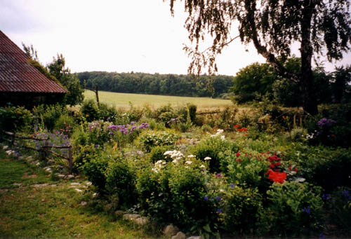
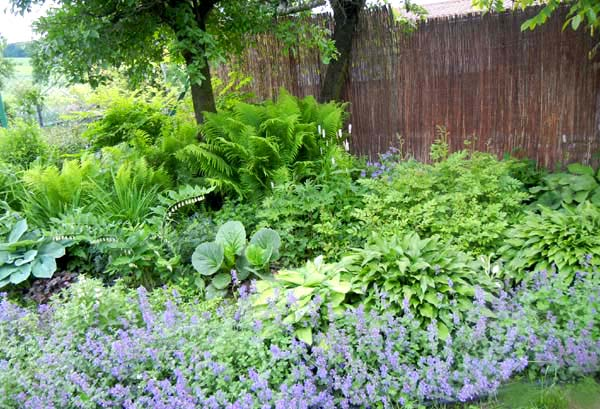
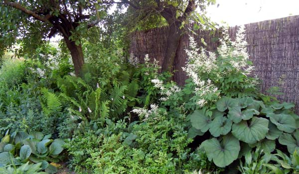
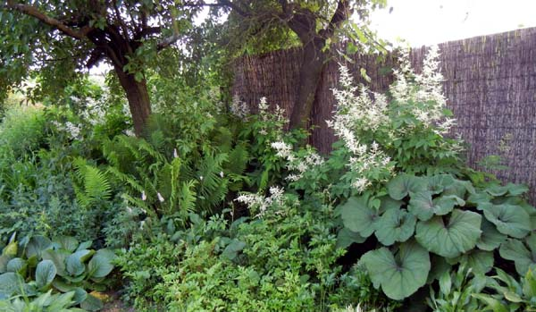
fsdf f sdf sdfsdf sdfsdf sdf dsf sd fds fsd f sdf